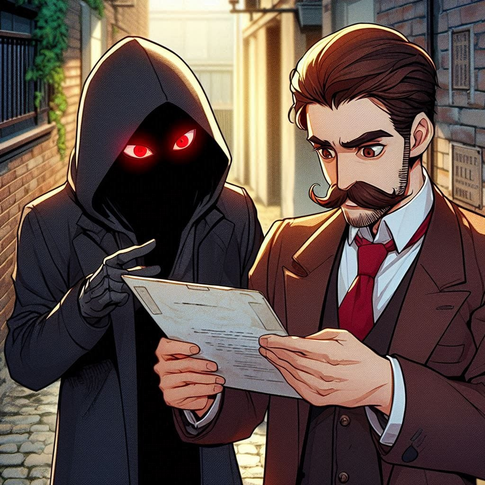

The town of Saintara was alive as usual—children running through the streets, vendors calling out their wares, noble ladies indulging in shopping, and the ever-bustling cafés filled with laughter and chatter. But on the very night the council meeting about the Quilientian heir’s debut concluded, an unknown visitor arrived. His purpose? Unknown. His intentions? A mystery. Draped in a black hooded cloak, the man moved silently through the town. Only one feature betrayed his ominous presence—his crimson-red eyes gleaming beneath the shadow of his hood. He slipped through the lively streets unnoticed, taking a turn into the dimly lit back alleys behind an infamous inn, a place known for harboring those with less-than-noble intentions. There, in the secluded shadows, he met a man with brown hair and a well-groomed mustache—the Romancian minister, Musol. Musol, currently residing in Saintara as Romancia’s representative until the heir’s debut, greeted the stranger with a cautious nod. Without a word, the hooded man extended a sealed document along with a small wooden heart.
Musol’s sharp gaze landed on the engraved word on the heart— "Milli."
His lips curled into a smirk. This was more than just information. This was something personal.
In return, he handed over a hefty bag of gold. "Be ready for further instructions," he murmured before slipping back into the darkness.
Back in the royal castle, Musol locked himself inside his guest chamber. His paranoia flared as he double-checked every entry point—the corridor, balcony, doors, and windows—before finally settling at his desk. With a deep breath, he unsealed the mysterious document.
Title: Saintana
A cruel glint flickered in his eyes. Musol had been secretly gathering information on Saintana for the past three years. His grudge against her ran deep—three years ago, his dream of becoming Romancia’s emperor’s personal aide had been shattered due to **her** interference. She had seen through his greed, and though she hadn't exposed him outright, her mere suggestion had been enough to ruin his prospects.
Since then, Musol had become obsessed with uncovering her past, convinced that a dark history lurked behind her untouchable façade—one he could exploit to bring her downfall.
His eyes scanned the document eagerly:
1. Name: Saintana
2. Original Name: Unknown?
3. Age: 29
His irritation flared—nothing substantial so far. But he forced himself to keep reading.
"According to sources, Saintana was first discovered near the lake of Saintara ten years ago. She was covered in bloodstains, her clothes tattered and scorched. She did not speak. For days, she remained mute, yet her behavior was eerily mature, as if she had already lived a lifetime before that moment. Despite her silence, she somehow managed to influence Taintai IX’s aide, Rimika, through written notes and gestures. Impressed by her intelligence, they granted her residence, food, salary, and eventually entrusted her with diplomatic responsibilities. Officially, this was under the guise of offering protection to a foreigner. Unofficially, Saintara had gained an irreplaceable asset in the world of international affairs."
Musol’s fingers twitched. Useless, he thought bitterly. *Nothing but formalities!*
But as he turned the page, his smirk faltered.
"A week before Saintana’s arrival, an unexplained wildfire had ravaged the mountain beyond Saintara’s borders. This mountain had long been abandoned, yet it held significant historical importance to Flyrint, the empire of fire attributes. The Flyrintian officials insisted that no natural fire had been detected beforehand, leading them to believe it was man-made. However, no nation saw any value in investigating the cause, and the incident was soon forgotten."
Musol’s brow furrowed.A wildfire… right before she appeared?
He turned to the next page.
"The mountain now remains a barren, charred wasteland. However, during an exploratory mission, mercenaries discovered a peculiar item amidst the ashes—a small wooden heart, engraved with the name ‘Milli.’ Though slightly scorched at the edges, it was found near the remnants of what seemed to have once been a small house
REPORT END
Musol’s fingers tapped against the wooden heart as his mind spun with possibilities. The connections were there, but they were fragile, scattered like puzzle pieces with missing edges. Did this truly link to Saintana, or was he seeing what he wanted to see?
His greed whispered to him—this is it, the leverage you’ve been waiting for.
But a nagging doubt lingered. He still didn’t know her origin.
Not yet.
With a deep breath, Musol dipped his pen into ink and began writing a coded letter. His spy in Flyrint was a desperate man, a pawn who needed Musol to secure his freedom of movement between Flyrint and Romancia’s borders. The illegal medical herb trade he ran was lucrative, but only if he remained unnoticed by the authorities.
Musol’s instructions were simple:
"Dig deeper into the fire incident from ten years ago. Find any trace of who caused it, any survivor, any whispers of an unknown figure appearing afterward. I want everything. Do not fail
He sealed the letter and leaned back once more, exhaling slowly.
Does Saintana truly hail from that mountain?
Or was his own ambition twisting coincidences into a narrative that wasn’t there?
It didn’t matter. *If* he could find proof—real proof—then it wouldn’t just be a tool against her.
It would be her end